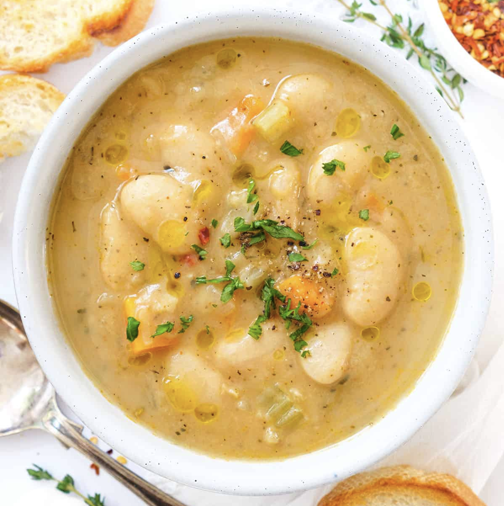

приготовление:
-
Почистить 1 луковицу и 1 морковь, вымыть 1 средний лук-порей. Нарезать овощи и обжаривать на 1 ст. л. оливкового масла 6–8 минут, пока они не станут мягче.
-
Добавить измельчённые 1–2 зубчика чеснока и обжаривать ещё 30 секунд.
-
Влить 1,1 л воды, добавить овощной бульонный концентрат на этот объём воды и довести до кипения.
-
Почистить 2 картофелины, нарезать кубиками, добавить в кастрюлю и варить 10 минут.
-
Добавить 200 г замороженной цветной капусты и варить ещё 7–8 минут.
-
Слить жидкость из 1 банки крупной белой фасоли. Добавить в суп 400 г фасоли и 150 г зелёного горошка, варить ещё 5 минут.
-
Размять примерно треть фасоли прямо в кастрюле, чтобы суп стал гуще.
-
Добавить 1/2–1 ч. л. Worcestershire sauce, чёрный перец и тимьян, укроп или петрушку. Попробовать и при необходимости посолить.